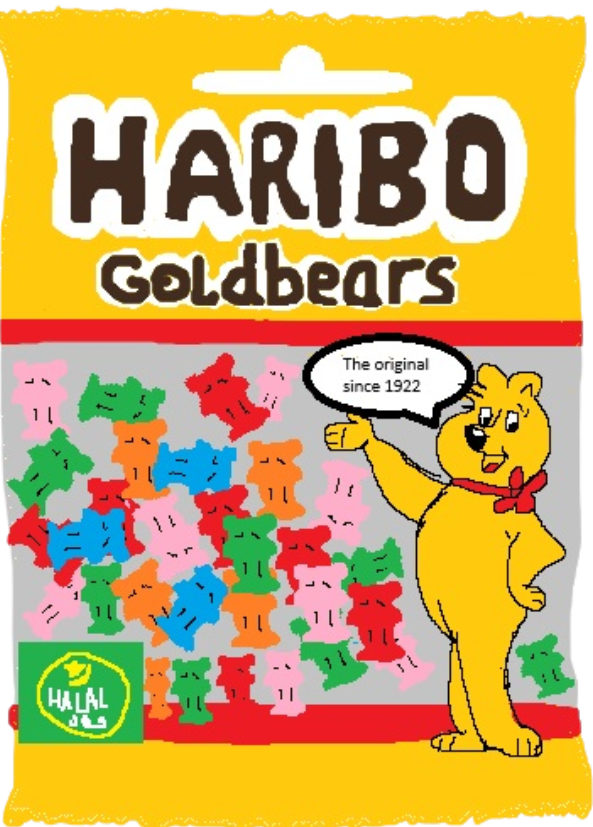

Sweets espcially haribo's will always give me that instant hit of happiness which is why I always try to have a packet at least 3 or 4 times a week. I love any flavour of haribo's but my favorite are easily goldbears
